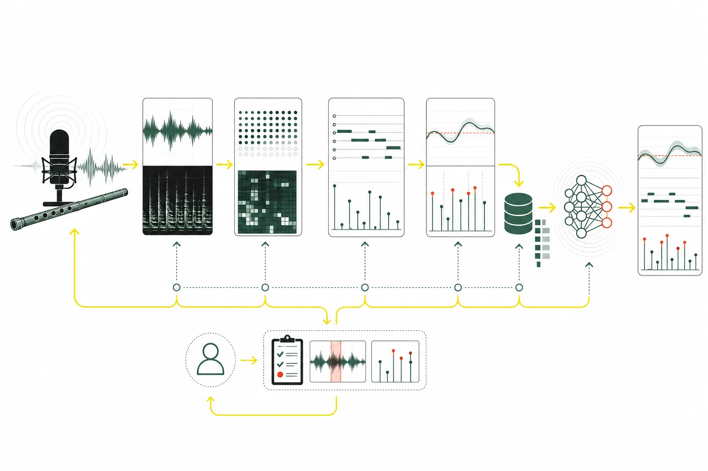

研究論文 · 2025
CCMusic: An Open and Diverse Database for Chinese Music Information Retrieval Research
Monan Zhou、Shenyang Xu、Zhaorui Liu、Zhaowen Wang、Feng Yu、Wei Li、Baoqiang Han
錄音、數碼化及人工智能人物與機構曲目、作曲及演奏實踐
未核實開放取用
研究領域
從下列子題閱讀相關文章，或查找本領域已收錄的 7 筆來源。各子題的資料深度不同，頁內另列收錄狀況。
7 項已記錄核對的陳述 · 1282 字正文
本頁達到站內正文門檻，並附核對來源。層級反映資料覆蓋，不等於外部專家認證；引用前請核對原文。 來源數依站內規則去重，尚未逐一追查相互引用的依賴關係。
1 篇
7 筆
研究論文 · 2025
Monan Zhou、Shenyang Xu、Zhaorui Liu、Zhaowen Wang、Feng Yu、Wei Li、Baoqiang Han
研究論文 · 2021-08-19
Xia Gong、Yuxiang Zhu、Haidi Zhu、Haoran Wei
研究論文 · 2026
PubMed Central
研究論文 · 2023
Xinmeng Luan、Song Wang、Zijin Li、Gary Scavone
研究論文 · 2018-12-01
P.-A. Taillard、F. Silva、Ph. Guillemain、J. Kergomard
